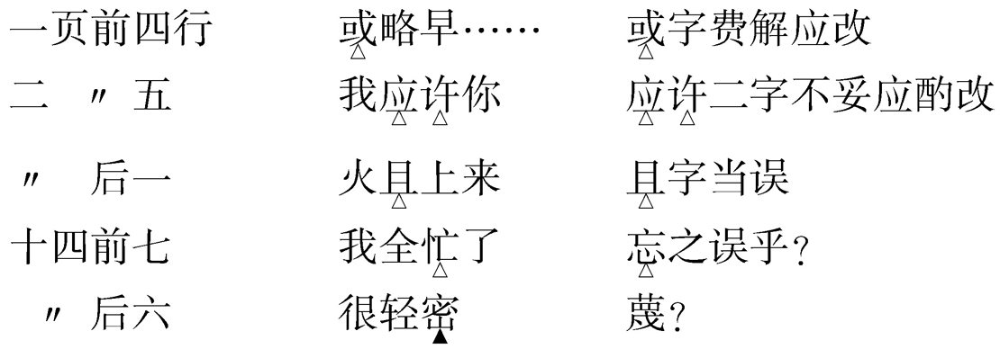
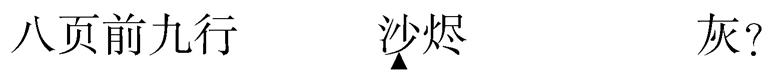

二弟览：得四日函俱悉，雁冰令我做新犹太事[288]，实无异请庆老爷[289]讲化学，可谓不届之至；捷克材料[290]我尚有一点，但查看太费事，所以也不见得做也。
译稿[291]中有数误字我决不定，所以将原稿并疑问表附上，望改定原车带回，至于可想到者，则我已径自校正矣。
豱公[292]冒雨出走，可称雪凉，而雄鸡乱啼亦属可恶，我以为可于夜间令鹤招[293]赶打之，如此数次，当亦能敬畏而不来也。
对于バンダン滑倒公[294]不知拟用何文，我以为《无画之画帖》便佳，此后再添童话若干，便可出单行本矣。
五日信并稿[295]已到，我拟即于日内改定寄去，该号既于十月方出，何以如此之急急耶。
脚短[296]想比豱公较静，我以为《日華公論》[297]文，不必大出力，而从缓亦可，因与脚短公说话甚难，易于出力不讨好也。你跋中引培因[298]语，然则序文拟不单译耶。
哀禾著作

《伊伯拉亨》

《巴尔干小说》目录中，Caragiale（罗马尼亚）的《复活祭之烛》[299]，我是有的，但作者名字，我的《世界文学史》中全没有。Lazarević的《盗》，我也有，但题目是《媒トシテノ盗》[300]。Sandor-Gjalski[301]的两篇，就是我所有的他的小说集的前两篇，这人是克洛谛亚第一流文人，《斯拉夫文学史》中有十来行说他的事。而Vetendorf，Friedensthal，Netto[302]三位，则无可考，大约是新脚色也。
他们翻译，似专注意于最新之书，所以略早出板的如レルモントフ，シユンキウヱチ[303]之类，便无人留意，也是维新维得太过之故。我这回拟译的两篇，一是Vazov的《Welko的出征》，已经译了大半；一是Minna Canth的《疯姑娘》；Heikki的《母亲死了的时候》[304]因为有删节，所以不译也。
勃加利亚语Welko=狼，译媎[305]注云“等于Jerwot和塞尔维亚的Wuk，在俄=Wolk，在波兰=Wilk”。这W字不知应否俱改V字；又Jerwot[306]是什么国，你知道否？
兄树上 八月六日
注 释
[288] 做新犹太事 指沈雁冰约请鲁迅撰文介绍新犹太文学的事。后沈自撰《新犹太的文学概观》一文，载《小说月报》第十二卷第十号“被损害民族的文学号”（1921年10月）。
[289] 庆老爷 当指周庆蕃（1845—1917），字椒生，鲁迅本家叔祖。清末举人，曾任江南水师学堂汉文教习。
[290] 捷克材料 指捷克凯拉绥克所著《斯拉夫文学史》中有关捷克文学的部分。后由鲁迅译出，题为《近代捷克文学概观》，载《小说月报》第十二卷第十号。
[291] 指周作人译阿霍《父亲拿洋灯回来的时候》，后载《小说月报》第十二卷第十号。
[292] 豱公 未详。
[293] 鹤招 王鹤照（1889—1969），浙江绍兴人，当时周宅的佣人。
[294] バンダン滑倒公 指章锡琛，参看351114信注〔1〕。当时任《妇女杂志》主编。バンダン，读若“邦当”，形容滑倒的声音。《无画之画帖》，丹麦安徒生所作童话，又译《月底话》。
[295] 指周作人译希腊蔼夫达利阿谛斯作短篇小说《伊伯拉亨》，载《小说月报》第十二卷第十号。
[296] 脚短 未详。
[297] 《日華公論》 日本人在华创办的日文杂志，约1913年（大正二年）创刊，先后在北京、天津出版。主要刊载关于中国的政治、经济、文化评论，也登载文学作品。
[298] 培因（R.Nisbet Bain） 英国翻译家。曾译介过《哀禾小说集》，周作人在《父亲拿洋灯回来的时候》译后附记中，曾引用培因对阿霍的评论。
[299] Caragiale 卡拉迦列（I.L.Caragiale，1852—1912），罗马尼亚作家。著有喜剧《一封遗失的信》、短篇小说《复活祭之烛》等。
[300] Lazarević 拉柴莱维支（1851—1891），塞尔维亚小说家。《媒トシテノ盗》，即《盗为媒》。沈泽民译本题作《强盗》，载《小说月报》第十二卷第十号。
[301] Sandor-Gjalski 山陀尔·雅尔斯基（1854—1935），克罗地亚作家。作品有《巴索里奇老爷》、《在古老的屋顶下》等。
[302] Vetendorf 未详。Friedensthal，弗里登塔尔（1896—？），德国作家。著有诗歌和长短篇小说多种。后来希特勒禁止他的作品，流亡英国。曾被推为西德笔会名誉主席。Netto，涅特（1864—1934），巴西作家，写作诗歌、戏剧和散文。
[303] レルモントフ 莱蒙托夫（M.Ю.Лермонтов，1814—1841），俄国诗人。シェンキウヱチ，显克微支（H.Sienkiewicz，1846—1916），波兰作家。
[304] Vazov 伐佐夫（И.Вазов，1850—1921），保加利亚作家。《Welko的出征》，即《战争中的威尔珂》，短篇小说。Minna Canth，明娜·康特（1844—1897），芬兰女作家。《疯姑娘》，短篇小说。这两篇都由鲁迅译载于《小说月报》第十二卷第十号。Heikki，未详。
[305] 意为女译者，指《战争中的威尔珂》的德译者扎典斯加。
[306] Jerwot 日尔沃。